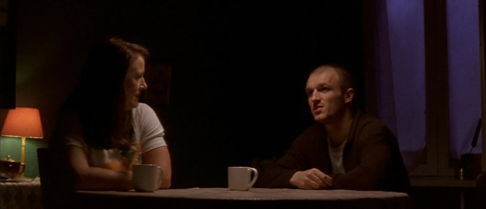
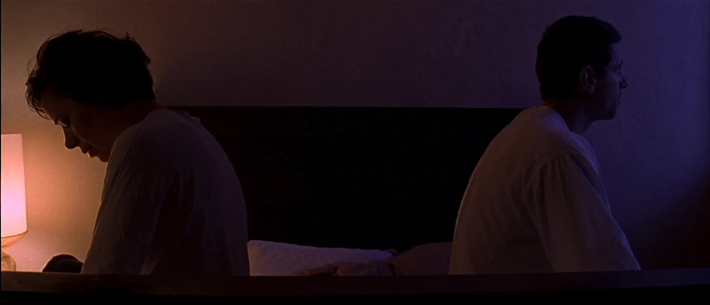
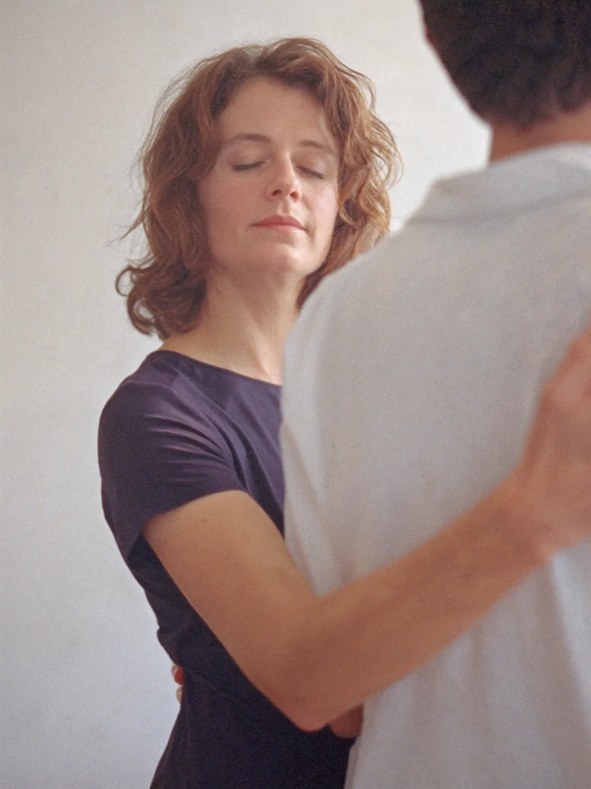
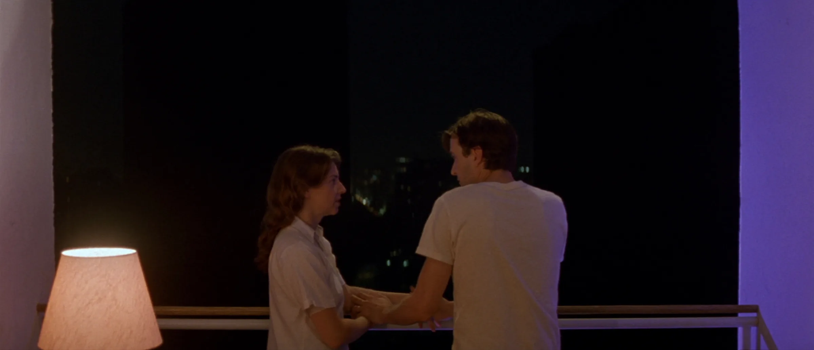

вы говорите
«Делай как хочешь»
имеете в виду
спроси меня, мне это важно
он слышит
свободен

В каждой паре есть правила, которые никто не произносил вслух. Онлайн-группа для женщин, которые устали говорить одно, иметь в виду другое и слышать в ответ третье.
Вы его не подписывали. Но соблюдаете каждый день: кто первой идёт мириться, кто решает про деньги, о чём лучше промолчать. Пункты не записаны, их просто все знают. За шесть встреч мы прочитаем этот договор вслух и перепишем его.
Между ними теряется то, что вы имели в виду. Так ссора и идёт по кругу: каждый отвечает не на то, что ему сказали.
спроси меня, мне это важно
свободен
всё не нормально, но я устала объяснять
всё нормально
мне страшно, что я тебе не нужна
опять контроль
помоги, но так, чтобы мне не пришлось просить
справится
мне больно, и я не знаю, как сказать об этом спокойно
опять она кричит
Разбираем настоящие ссоры участниц и ищем фразу, которую можно сказать вместо крика или молчания.
Как проходят встречиВ ссоре часто говорят не двое взрослых. Говорят двое детей, которых когда-то не услышали. И каждый кричит не партнёру, а кому-то из своего детства.

С ГАИ на аварии так же: вызывает чаще тот, кто виноват, и уверен на сто процентов, что не он.
Поэтому мы не ищем виноватого. Мы смотрим, как устроены вы и как устроен он, и ищем слова, которые до него дойдут.
Пары не нужны. Приходите одна: договор держится на двоих, и когда меняется одна сторона, меняется и вторая.
Раз в неделю по два часа. Каждая встреча про одну тему, о которой в паре молчат, и на каждой вы пишете один пункт нового договора.
Кто первым идёт мириться и сколько это стоит. Разбираем ваш сценарий ссоры от первой фразы до хлопнувшей двери.
пункт договораКак мы миримся
Кто решает, кто просит и что в семье считается «моим». Почему разговор о деньгах почти всегда про что-то другое.
пункт договораКак мы решаем про деньги
Невидимая работа. Кто в доме «помогает», а кто за всё отвечает и держит в голове.
пункт договораКто за что отвечает
О чём молчат, чтобы не обидеть. Как просить о близости и как отказывать, чтобы это не стало войной.
пункт договораКак мы говорим о близости
Каким родителем каждый из вас обещал себе быть. Как остаться парой, когда вас больше, чем двое.
пункт договораМы родители и пара
Его мама, ваша мама, праздники и чужие советы. Где граница вашей семьи. Сводим все пункты в один договор.
пункт договораГраница нашей семьи
Разбираем настоящие ссоры участниц: что сказала, что имела в виду, что он услышал и чем ответил. Видим, где сценарий каждый раз ломается.
Ищем фразу, которую можно сказать вместо крика или молчания. Домой вы уносите один разговор, который стоит провести на этой неделе.

Я танцую аргентинское танго. В нём не договоришься словами: только телом решается, кто ведёт, кто следует, где пауза и где граница.
Короткие практики из танго, которые можно сделать перед экраном: на опору, на «нет» и на шаг навстречу. Чтобы новое правило было не только в голове.
Ваш договор на одной странице. Не чтобы повесить на холодильник, а чтобы было с чем прийти к мужу и с чего начать разговор.
Вы будете видеть его с первой фразы и сможете сойти с него раньше, чем хлопнет дверь.
Как сказать о боли так, чтобы вас услышали, а не начали защищаться.
Шесть пунктов о деньгах, быте, близости, детях, родне и о том, как вы миритесь.

«Когда приходят со словами „он меня не слышит“ и „она всё время недовольна“, мы не ищем виноватого».
Я работаю с парами и с женщинами, которые устали воевать в отношениях. Почти все консультации веду онлайн.
Много лет я работала в финансах, где всё держится на логике и ясном результате. Потом погружалась на 50 метров, поднималась по отвесной скале и училась слышать партнёра в танго. Поэтому не верю, что отношения чинятся только «в голове» или только «в чувствах».
«10 пунктов, которые вы подписали молча». Отметьте, какие есть у вас дома.
бесплатно«Почему он не слышит, когда вы кричите». Разберу ссоры, которые пришлют участницы.
17 декабря, 19:00 МСК20 минут со мной: подходит ли вам группа или лучше начать с личной работы.
бесплатноШесть встреч и ваш новый договор на одной странице.
старт 14 январяЕсть. Договор держится на двоих: когда одна сторона перестаёт соблюдать старые пункты, второй тоже приходится меняться. Мужа звать не нужно. Если потом захотите прийти парой, я работаю и с парами.
Нет. Задача не в том, чтобы остаться или уйти, а в том, чтобы перестать воевать и решать уже спокойно, на своих условиях.
Ровно столько, сколько захотите. Можно весь первый вечер просто слушать. Всё, что звучит в группе, остаётся в группе: об этом договариваемся в самом начале.
Это группа с практикой, а не лечение. Если всплывёт что-то, с чем лучше работать один на один, я скажу об этом и предложу личную консультацию.
Записи встреч я не веду, чтобы участницы могли говорить свободно. Пришлю конспект и упражнение, а вопросы разберём в чате.
Напишите мне, и я пришлю удобный способ оплаты.

14 января, шесть встреч, до десяти женщин.
Хочу в группу